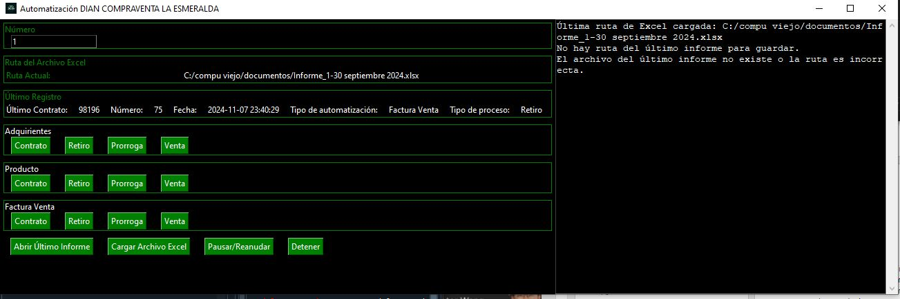
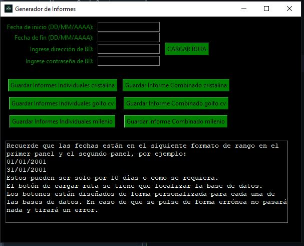
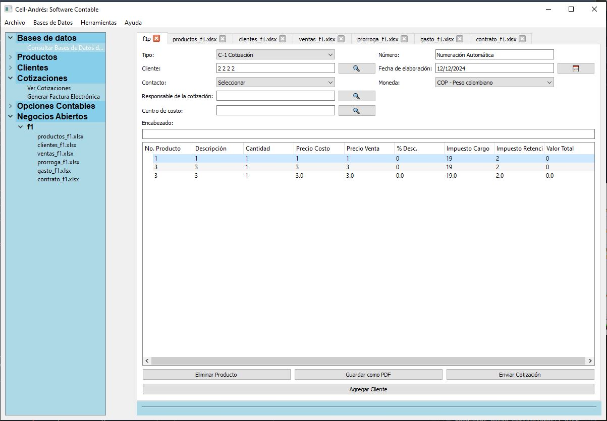
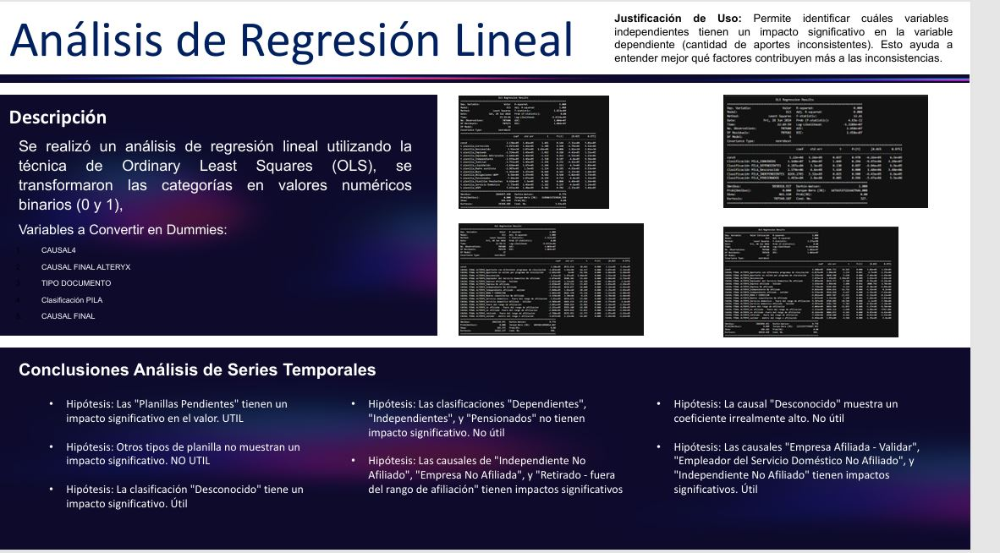
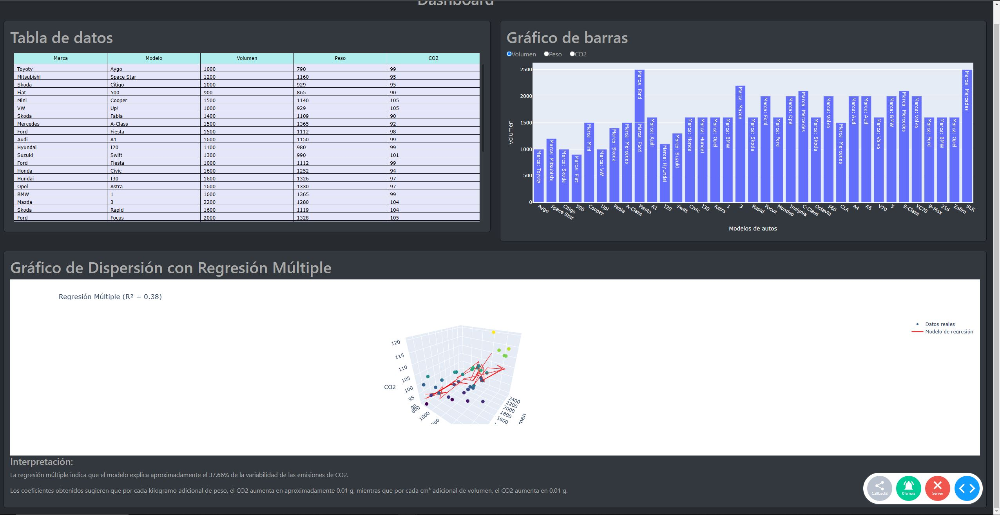

Proyectos
1. Software contable y automatización para facturas electrónicas
Desarrollé un sistema contable integrado con funciones de automatización para la generación y envío de facturas electrónicas cumpliendo con las normativas fiscales. El sistema incluye herramientas de análisis financiero y generación de reportes detallados.
 Ver en GitHub2. Software de informes automatizados
Este software automatiza la recopilación de datos y genera informes personalizados en tiempo real, reduciendo el tiempo de análisis manual. Fue diseñado para adaptarse a las necesidades específicas de empresas medianas.
 Ver en GitHub3. Página web para un periódico
Diseñé y desarrollé una página web dinámica para un periódico local. La plataforma incluye un sistema de gestión de contenido (CMS) que permite a los administradores publicar artículos, noticias y multimedia de forma eficiente.
Ver en GitHub4. Software contable para empresa de refrigeración y mantenimiento
Implementé un sistema contable que optimiza el control de inventarios, genera facturas y organiza los reportes financieros para una empresa mediana del sector de refrigeración y mantenimiento.
 Ver en GitHub5. analítico de datos para una empresa de caja de compensación
Realicé un análisis exhaustivo de datos para identificar patrones de comportamiento y optimizar la gestión de recursos en una empresa grande de caja de compensación. Este proyecto incluyó el desarrollo de modelos predictivos.
 Ver en GitHub6. Análisis estadístico y dashboard para red de compraventas
Desarrollé un dashboard interactivo que presenta análisis estadísticos clave para una red de compraventas. Este proyecto mejoró la visualización de datos y facilitó la toma de decisiones basadas en información.
 Ver en GitHub